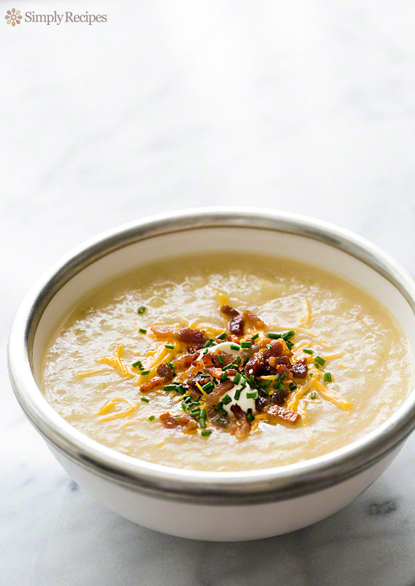

Baked Potato Soap

Back
Ingredients
- 4 pounds russet potatoes (about 7 medium potatoes)
- 1/4 pound thick sliced bacon, cut crosswise into 1/8-inch slices (lardons)
- 1 large onion, finely chopped (about 2 cups)
- 2 ribs celery, finely chopped
- 6 cups chicken stock
- 1 teaspoon kosher salt (more to taste)
- 1/8 teaspoon of ground white or black pepper
- 2 to 4 Tbsp heavy cream (optional)
Garnish:
- Grated sharp cheddar cheese
- Sour cream
- Minced chives
- Crumbled bacon (from step 2 in method)
Methods
- Scrub the potatoes clean and poke them all over with the tines of a fork or paring knife (this is so they don't explode from internal pressure building up as they cook). Place on a foil lined baking sheet and bake at 400°F for 1 hour, or until easily cut through with a knife. Remove and let cool enough to handle. (To speed up cooling, slice them in half lengthwise.)
bake the potatoes brown the bacon lardons
- Place bacon lardons in a large, thick bottomed Dutch oven (about 5 to 6 quart pot). Heat on medium high until the bacon starts to brown then lower the heat to medium. Cook until the bacon has rendered most of its fat and the lardons are browned and crispy. Remove the cooked bacon and set aside. Remove all but 1 tablespoon of bacon fat from the pan. (Do not discard bacon fat in your sink, it will clog the drain. Pour the fat into a jar and let it cool and solidify. Then either scoop it out and discard it or use it for another purpose.)
- Add the chopped onion and celery to the remaining bacon fat in the pot. Cook for 2 minutes on medium high, then lower the heat to low, and cover the pot. Let cool slowly on low heat for 15 to 20 minutes.
cook the chopped onions and celery scoop cooked potato out of potato skins and into pot
- When potatoes are cool enough to handle, scoop out the insides to a bowl. Then add it to the cooked onion and celery mixture along with 6 cups chicken stock. Add a teaspoon of kosher salt. Bring the soup to a simmer and reduce the heat to low. Use a potato masher to mash the potatoes into the stock.
cook the baked potato soup
- Cook the potato soup for about 5 minutes, then use an immersion blender to purée about half of the soup if you want a slightly chunky soup, or purée all of it if you want a smoother soup. Stir 2 to 4 tablespoons of heavy cream into the soup if you want a creamier soup. Add more salt and pepper to taste.
- Pour into bowls and top with grated cheddar, sour cream, chives, and crumbled crispy bacon.